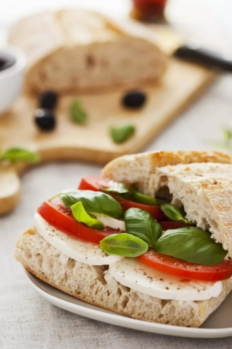

Tomato Brie Basil Sandwich

Description
Tomato brie basil sandwich is a luscious sandwich recipe using fresh summer tomatoes, basil leaves, toasted ciabatta bread, and melted brie cheese.
Yum. You can serve this sandwich without heating it. Just assemble it and dig in, but in that case, we would use olive oil instead of the butter for a purer taste.
The sandwich must be made with the best tomatoes since there are only five ingredients in the recipe.
Get the best Brie you can afford, and tomatoes that are right out of the garden. Buy them from a Farmer's Market or from a good supermarket.
Never make this sandwich with the tomatoes you get in the winter; they will be too wooly and won't be juicy and flavorful.
Ingredients
- 1 loaf ciabatta bread
- 3 tablespoons softened butter
- 8 ounces brie cheese slices
- 6 red ripe tomatoes (cut into 1/3-inch slices
- 20 fresh basil leaves
Steps
- Gather the ingredients.
- Spread the butter evenly on the cut sides of the ciabatta bread, or drizzle with the same amount of olive oil if you aren't going to toast the sandwich.
- Toast the bread halves in a toaster oven or bake them in a 375 F oven for 7 to 11 minutes or until the butter melts and starts to sizzle.
- Arrange the Brie cheese slices on the top half of the ciabatta bread; toast again until the Brie melts, or bake for another 4 to 6 minutes.
- Make sandwiches with the basil leaves, tomato slices, and the toasted bread. Put the sandwich together, then cut into 3-inch segments. Press down lightly with your hand and serve immediately.
Home Page